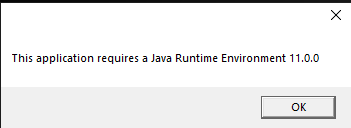
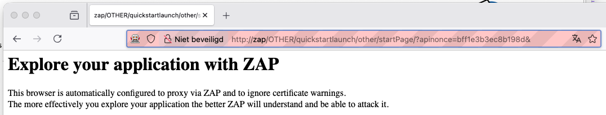
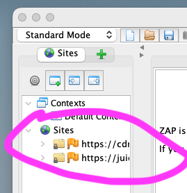
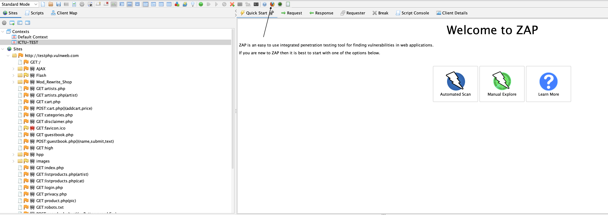
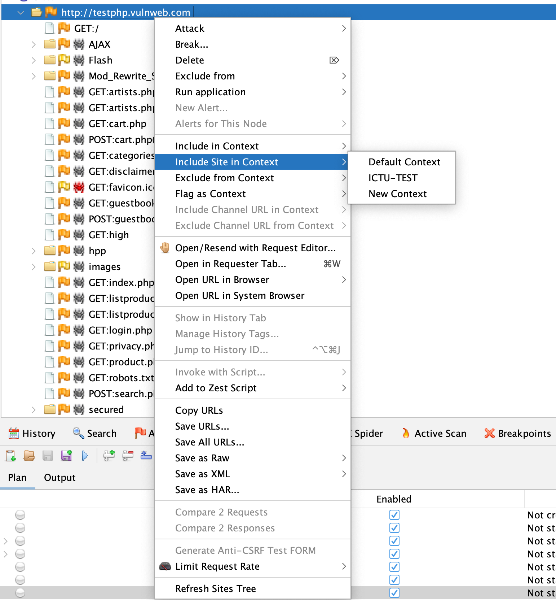
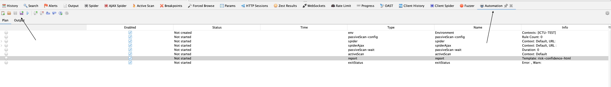
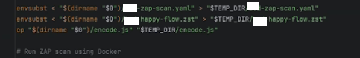
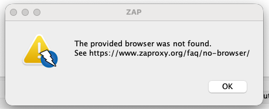
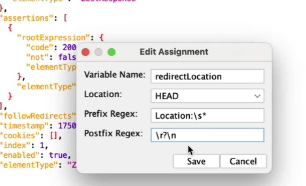
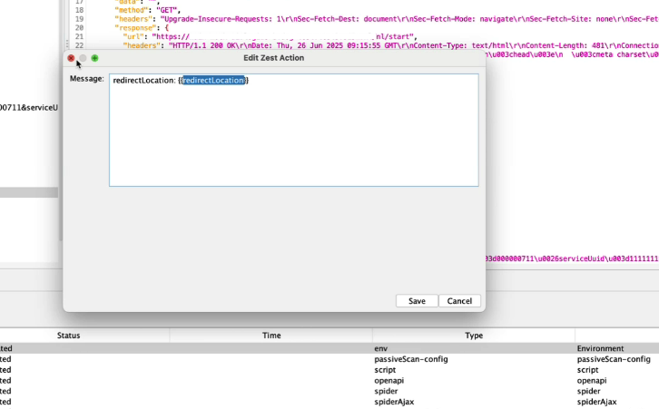

Introductie Toolgids
Voor de softwareontwikkeling adviseert ICTU specifieke tools die de softwarekwaliteit controleren. Zie M16: Het project gebruikt tools voor vastgestelde taken.
Alle tools hebben eigen documentatie online. Voor sommige tools is deze online documentatie niet toereikend. Deze toolgids biedt praktische handleidingen, stappenplannen, verdiepingen en referenties, ter aanvulling op de officiële documentatie.
Heb je een verbetersuggestie? Dien een issue in via https://github.com/ICTU/Kwaliteitsaanpak/issues/new of volg de instructies op de readme-pagina om zelf bij te dragen.
ZAP - Zed Attack Proxy
Zed Attack Proxy (ZAP) is een open-source tool die gebruikt wordt voor het testen van de beveiliging van webapplicaties. ZAP biedt functies als automatische scans, handmatige testen, rapportage en uitbreidbare plug-ins. De tool integreert goed in CI/CD-processen en ondersteunt API-tests.
ZAP Verdieping en Begrippen
ZAP algemeen
ZAP is een open-source tool die fungeert als een kleine, geautomatiseerde penetratietest in de pipeline. Het is een tool die, net als bij testautomatiseringsscripts, een serie acties uitvoert op de system-under-test (SUT) om te onderzoeken of deze applicatie beveiligingskwetsbaarheden heeft. Het is niet representatief voor een echte penetratietest, maar dit kan wel een goede voorbereiding zijn.
ZAP is bedoeld voor zowel mensen die geen specialist zijn op het gebied van applicatiebeveiliging en een beveiligingsscan aan de pipeline willen toevoegen, als professionele penetratietesters die ter plekke een eerste analyse willen doen.
ZAP staat voor Zed Attack Proxy en werkt dus als een proxy, een tussenlaag. Het opereert, net als een man-in-the-middle-aanval (MITM), tussen de browser en het testobject (SUT). Met ZAP kun je het verkeer analyseren en manipuleren om kwetsbaarheden te vinden, zoals XSS en SQL-injecties.
ZAP kan geconfigureerd worden om een stappenplan (in ZAP heet dit een automation plan) uit te voeren vanuit de CI/CD-pijplijn. Dit plan kan onderstaande acties uitvoeren.
- Vooraf gedefinieerde acties uitvoeren met behulp van een zest-script of automation plan.
- De API van de applicatie scannen met behulp van de OpenAPI-specificaties.
- Een spiderscan (oriëntatie) uitvoeren om alle blootgestelde bronnen te ontdekken.
- Actieve en passieve beveiligingsscans uitvoeren op de API en de bronnen die zijn ontdekt tijdens de spiderscan.
- Rapporten genereren in zowel computerleesbare (XML) als menselijk leesbare (HTML) formaten, zodat deze toegankelijk zijn in Quality-time.
Geschiedenis en achtergrond
ZAP is ontstaan als een fork van Paros Proxy en is sinds 2010 uitgegroeid tot een van de meest gebruikte open source webapplicatie-securityscanners. Het is vooral populair onder QA-engineers, ethical hackers en DevOps-teams vanwege de combinatie van open source en uitgebreide functionaliteit.
Meer info: zie de Wikipedia-pagina van ZAP
Belangrijkste kenmerken
- Ondersteuning voor zowel handmatige als geautomatiseerde security tests
- Passieve en actieve scans op webapplicaties
- Integratie met CI/CD (bijv. Jenkins, GitHub Actions)
- REST API voor scripting en externe aansturing
- Plug-in-architectuur met uitbreidingen voor o.a. Selenium, HUD, Docker
ZAP-client
De ZAP-client is een desktopapplicatie die wordt gebruikt voor ad-hoconderzoeken en het maken van testautomatisering (automation plan) die later gebruikt kan worden in een pipeline. Deze standalone applicatie heeft een zeer steile leercurve, omdat de interface en de terminologie door gebruikers als niet-intuïtief worden ervaren. Dit is de aanleiding geweest om deze toolgids op te zetten.
Meer info ZAP Installatiegids
Introductie van het Automation plan
Het automatiseren van ZAP kan het best gedaan worden met een zogenaamd automation plan. Dit is een .yaml-script dat je kan uitvoeren in je pipeline. Met behulp van een automation plan kun je ook rapportages genereren.
Een automation plan bevat omgevingsvariabelen (env) en taken (jobs). De jobs zijn de afzonderlijke stappen die uitgevoerd worden. Een scriptjob importeert een scriptbestand, bijvoorbeeld om een locatie- of configuratiebestand in te laden.
Onderstaande onderdelen zitten doorgaans in een automation plan.
- De application context (URL's, authentication, session management)
- Verschillende scan jobs (passive scan, script execution, OpenAPI scanning, spider scanning, etc.)
- Instellingen voor report generation
Voor meer info, zie: ZAP-gids Automation Plan
Acties / jobs
ZAP kent meerdere acties (vaak scans genoemd); de belangrijkste zijn: passive scan en active scan. Waarbij de passive scan een onderzoek is om te kijken welke URL's en links er te vinden zijn (een soort crawlen) en de active scan is een aanval op die URL's. Active scan is dus een verwarrende naamgeving; het had beter active attack kunnen heten.
- OpenAPI - scant OpenAPI-specificaties (net zoals Swagger dit doet)
- spider
- AJAX-spider
- sequence.
- active scan = uitvoer van het ZEST-script
Omgevingsvariabelen in ZAP
Binnen het ZAP Automation Framework kun je gebruikmaken van omgevingsvariabelen om je automationplannen flexibeler en herbruikbaar te maken. Deze variabelen worden gedefinieerd in het env:-gedeelte van je YAML-configuratie.
Gebruik
Omgevingsvariabelen worden ingesteld in het parameters-veld van de env-sectie, bijvoorbeeld:
env:
parameters:
release_name: "v1.2.3"
base_url: "https://test.example.org"
Deze variabelen kun je vervolgens gebruiken in andere delen van het plan via ${variabelenaam}:
jobs:
- type: passiveScan-config
- type: requestor
parameters:
requests:
- url: "${base_url}/login"
Variabelen worden alleen vervangen op plekken waar ZAP dit expliciet ondersteunt, zoals bij url, name, includedPaths en andere parameterwaarden.
In velden waar variabelen niet automatisch worden geïnterpreteerd (zoals binnen bepaalde scripts), moet je dit handmatig oplossen.
> De interpolatie gebeurt eenmalig bij het laden van het automation-plan; dynamische aanpassing tijdens runtime is niet mogelijk.
Meer informatie: ZAP officiële bronnen
Introductie van Zest
Zest is een experimentele, gespecialiseerde scripttaal (ook wel een domeinspecifieke taal genoemd) die oorspronkelijk is ontwikkeld door het beveiligingsteam van Mozilla en bedoeld is voor gebruik in webgerichte beveiligingstools.
Deze taal wordt standaard meegeleverd met ZAP.
Meer informatie en verdieping: zie ZAP-gids Zest
Referentie — Syntax, jobs en begrippen
Belangrijke jobs
- OpenAPI: laadt de API-specificatie
- spider / ajaxSpider: verken endpoints
- activeScan / activeScan-config: actieve aanvalsscan
- script (Zest): sequences of custom logic
- report: output in html/xml/sarif
- exitStatus: quality gate
Variabelen
env:
parameters:
base_url: "https://test.example.org"
release_name: "v1.2.3"
Gebruik als ${variabelenaam} in jobs.
Context-management
- Context in GUI ≠ Context in Automation Plan (kopie!).
- Synchroniseer handmatig of genereer plan opnieuw na wijzigingen.
Explanation — Concepten & best practices
- ZAP is geen vervanging van een pentest (penetratietest), maar biedt een shift-left security check op een draaiende (runtime) applicatie..
- Proxy-model: inzicht in al het verkeer; History is fantastisch voor het bouwen van flows.
- Passive vs Active scan: passief = observeren, actief = muteren en aanvallen.
- Sequences: onmisbaar voor flows met login of state.
- Authenticatie: integreer altijd in context; voorkom false negatives.
- Exit-criteria: altijd tijds- en regellimieten instellen; zo blijft CI voorspelbaar.
- Rapportage: HTML voor menselijk lezen, XML/SARIF voor dashboards en quality tooling.
Authenticatie
- Form-based: configureer context (login URL, users, logged-in regex).
- Tokens (header/bearer): gebruik Replacer of HTTP Sender script.
- OIDC/JWT: vaak herbruikbaar, maar houd rekening met expiratie en refresh.
- SAML: tokens zijn niet herbruikbaar → elke run opnieuw ophalen (via sequence of regex).
Referentie-YAML-bestand
env:
contexts:
- name: "ICTU-Test"
urls:
- "http://testphp.vulnweb.com"
includePaths:
- "http://testphp.vulnweb.com.*"
authentication:
method: "form"
parameters:
loginUrl: "http://testphp.vulnweb.com/login.php"
loginRequestBody: "uname={%username%}&pass={%password%}&login=login"
verification:
loggedInRegex: "Logout"
loggedOutRegex: "Login"
sessionManagement:
method: "cookie"
users:
- name: "demo-user"
credentials:
username: "test"
password: "test"
jobs:
- type: passiveScan-config
parameters:
maxAlertsPerRule: 0
- type: spider
parameters:
context: "ICTU-Test"
user: "demo-user"
maxDuration: 2
- type: ajaxSpider
parameters:
context: "ICTU-Test"
user: "demo-user"
maxDuration: 2
- type: activeScan
parameters:
context: "ICTU-Test"
user: "demo-user"
policy: "Default Policy"
maxRuleDurationInMins: 2
- type: report
parameters:
template: "traditional-html"
reportDir: "./zap-reports"
reportFile: "ictu-zap-report.html"
- type: exitStatus
parameters:
warnLevel: Low
errorLevel: Medium
ZAP Installatiegids
Download en installatie voor desktop
Een OS-specifieke variant van de ZAP Desktop Tool kan worden opgehaald van:
https://www.zaproxy.org/download/
Voor het opstarten van de tool is Java JRE versie 11 of hoger nodig (geen JDK). Anders verschijnt de volgende melding:

Installatie en gebruik via Docker
docker run --rm -it -u zap -p 8090:8090 -p 8091:8091 -v "$PWD":/zap/wd ghcr.io/zaproxy/zap-stable:latest sh
- Poort 8090 = proxy
- Poort 8091 = API
ZAP Stappenplan ZAP-script maken
Samengevat
- ZAP kun je gebruiken voor een actieve aanval (ad hoc) of geautomatiseerd middels een automation plan (zie [Gids Automation Plan]). Dit is verder uitgelegd in ZAP Verdieping en begrippen.
- In dit stappenplan wordt eerst een context gemaakt. Dit is een verzameling URL's die later kan worden gebruikt voor beide typen gebruikswijzen (ad hoc of geautomatiseerd).
- We voegen deze context toe aan een automation plan, zodat dit later in een CI/CD-pipeline kan worden uitgevoerd.
- Als laatste stap kan er een Zest-script worden toegevoegd aan het automation plan om daadwerkelijk stappen te doorlopen die later ook in die volgorde worden uitgevoerd.
In dit stappenplan wordt de desktopapplicatie gebruikt.
Volg deze instructies om ZAP te downloaden en te installeren: Download ZAP en installeer ZAP
Stap 1 — Een opname maken
Om het verkeer op te nemen, wordt geadviseerd om de geïntegreerde browser van ZAP (zie screenshot) te gebruiken, omdat die vooringesteld is.
⚠️ Let op: Dit is geen opname waarbij de stappen op volgorde kunnen worden afgespeeld. Dit registreert alleen alle calls/endpoints.
Als doelwit/testobject kun je gebruikmaken van onderstaande testwebsites.
- https://juice-shop.herokuapp.com/#/
- https://demo.owasp-juice.shop/
- https://demo.weblock.ru
- http://testphp.vulnweb.com/
- of kies hier een site: https://automationpanda.com/2021/12/29/want-to-practice-test-automation-try-these-demo-sites/
Wanneer je webbrowser eruitziet als hieronder, dan is het goed.

Als je dan naar de pagina gaat, moeten er in de zijbalk van ZAP Sites tevoorschijn komen. Dit is de opname.

- Gebruik de geïntegreerde browser van de ZAP GUI of;
- Zet je browser (Firefox/Chromium) op
http://localhost:8090. - Bezoek de webapplicatie of webpagina → requests verschijnen in History.
- ZAP functioneert als MITM-proxy: al het verkeer wordt zichtbaar en kan later opnieuw worden afgespeeld.

De browser die geïntegreerd is in ZAP en standaard via de proxy loopt.
⚠️ Wanneer je de melding krijgt: PRCONNECTRESET_ERROR of Kan geen verbinding maken
Stap 2 — Een context maken
Een context wordt gebruikt om de scope te bepalen van een scan/test. Het is het beste om dit te doen per webapplicatie die je wil scannen/testen/aanvallen. Een context zorgt ervoor dat ZAP de niet relevante endpoints niet meeneemt in een scan/test/aanval. De meeste webpagina's maken namelijk ook allerlei aanroepen naar websites die niet getest/aangevallen moeten worden met ZAP, zoals bv. een aanroep naar Google o.i.d.).
Deze stap (een context maken) kun je ook voorafgaand aan de opname doen (dan werkt het als een include/exclude). Toch adviseren wij om dit als tweede stap te doen, omdat je niet altijd weet welke calls je webapplicatie maakt en welke calls je daarvan wil behouden. Er is dan eerst een (grote) lijst met URL's van de endpoints als resultaat van de opname. Hierna kan een selectie worden gemaakt tussen wat wel moet worden behouden en wat niet.
> Meer info hierover is te lezen op.
> https://www.zaproxy.org/docs/desktop/start/features/contexts/
- Rechtsklik op de site in Sites → Include in Context → New Context.
- Definieer:
- IncludePaths / ExcludePaths (regex ondersteund)
- (Optioneel) Authentication + Users + Session Management
- Test je instellingen met de Authentication Tester.

Hier maak je de context aan, dit is de centrale configuratie die ZAP vertelt wat er bij een applicatie hoort en hoe deze werkt.
Stap 3 — Verkennen (passive scan)
ZAP kent verschillende soorten 'scans' als stappen. De 'passive scans' zijn stappen waarin ZAP fungeert als crawler/spider. De tool gaat op de pagina op zoek naar hyperlinks en calls en verzamelt deze en volgt de links ook. Op de gevonden andere pagina's doet hij hetzelfde, enzovoorts.
Het voordeel van deze passive scan is dat er een lijst wordt opgebouwd van endpoints buiten het opgenomen klikpad die later weer kunnen worden gescand/getest/aangevallen.
Je kunt 'ad hoc' scannen, ter oriëntatie en om resultaten te verwerken in een context.
Een passive scan kan ook onderdeel zijn van een automation plan, maar dan moet je eerst een automation plan maken en daarna de passive scan toevoegen.
- Spider: ontdekt links op basis van HTML-structuur.
- Ajax Spider: gebruikt een echte browser en is geschikt voor SPA’s (React/Angular/Vue).
- OpenAPI import: laad je API-spec om endpoints in scope te krijgen.
Een passive scan doe je zodat je ook andere links (buiten je opname-klikpad) kunt ontdekken, die later kunnen worden aangevallen. Het is een soort netscan / portscan. Je kunt hiermee alle endpoints in kaart brengen en de context uitbreiden, zodat deze later kan worden gebruikt in een aanval (active scan).
Stap 4 — Actieve scan
Je kunt nu een actieve scan doen ingeval je een ad-hoctest zou willen doen.
Om dit te doen, volg onderstaande stappen.
- Rechtsklik op een context of node → Attack → Active Scan.
- Kies scan-policy en stel limieten in:
maxScanDurationInMinsmaxRuleDurationInMinsthreadsPerHost
Stap 5 — Rapportage
- Report → Generate Report → kies
traditional-htmlen/oftraditional-xml.
Stap 6 — Automation Plan genereren
- Open het tabblad Automation → Generate Plan → exporteer als
af-plan.yaml. - Headless uitvoeren:
zap.sh -cmd -autorun /zap/wd/af-plan.yaml

Het Automation Panel, waar je gemaakte automation plans kan inzien en exporteren.
⚠️ Belangrijk: stel exit-criteria in (via exitStatus job) om te voorkomen dat scans onbeperkt draaien of CI/CD altijd slaagt.
ZAP Automation-plan-gids
Automation Plan met quality gate
Een compleet plan dat verkenning, scanning, rapportage en quality gates combineert:
env:
parameters:
base_url: "https://test.example.org"
contexts:
- name: app
urls: ["${base_url}"]
includePaths: ["${base_url}.*"]
jobs:
- type: passiveScan-config
parameters:
maxAlertsPerRule: 1000
- type: activeScan-config
parameters:
maxScanDurationInMins: 30
maxRuleDurationInMins: 5
threadPerHost: 2
- type: openapi
parameters:
context: app
targetUrl: "${base_url}"
apiUrl: "${base_url}/v3/api-docs"
- type: spider
parameters:
context: app
url: "${base_url}"
maxDuration: 5
- type: ajaxSpider
parameters:
context: app
url: "${base_url}"
maxDuration: 5
- type: activeScan
parameters:
context: app
- type: report
name: html
parameters:
template: traditional-html
reportDir: /zap/wd/reports
reportTitle: "ZAP Scan"
- type: report
name: xml
parameters:
template: traditional-xml
reportDir: /zap/wd/reports
- type: exitStatus
parameters:
warnLevel: Low
errorLevel: Medium
Runnen in Docker:
docker run --rm -t -u zap -v "$PWD":/zap/wd ghcr.io/zaproxy/zap-stable:latest zap.sh -cmd -autorun /zap/wd/af-plan.yaml
ZAP-Gids Zest
Wat is Zest?
Zest is een scripttaal ontwikkeld door Mozilla, specifiek voor security testing. Het is ontworpen om eenvoudig leesbare en herbruikbare scripts te maken die het gedrag van een gebruiker of aanvaller simuleren binnen ZAP. De doorontwikkeling van Zest wordt momenteel gedaan in de ZAP-repo en inmiddels niet meer in de repo van Mozilla.
Zest-scripts zijn:
- Menselijk leesbaar en gebaseerd op JSON-structuur
- Herhaalbaar en dus goed inzetbaar voor regressietests
- Geïntegreerd met ZAP: je kunt ze opnemen in automation plans, aanpassen via de ZAP-GUI en uitvoeren als onderdeel van scans
Zest wordt vaak gebruikt voor:
- Het automatisch uitvoeren van testscenario’s
- Het aanroepen van specifieke URL's met aangepaste headers of cookies
- Het controleren van verwachte responses en statuscodes
- Het vastleggen van testlogica op een declaratieve manier
Zest ondersteunt conditionele logica (zoals if-statements), logging, loops, en integratie met andere ZAP-functies zoals scan rules en contexten.
Sequences opnemen (Zest)
Voor stateful flows (login, checkout, transacties) die spiders vaak missen.
- Opnemen: Scripts → Sequences → Record Sequence. Doorloop scenario → stop → sla
.zst. - Requests toevoegen: via Add to Script from History.
- Variabiliseren: vervang vaste URL’s door
${base_url}. - Debug: voeg Action → Print toe; output zichtbaar in GUI.
- Integreren in plan:
- type: script
parameters:
engine: Zest
name: login-flow
type: sequence
file: "/zap/wd/sequences/login-flow.zst"
ZAP-Checklist klaar voor CI/CD
Voordat je de scripts die je lokaal hebt opgebouwd kunt deployen in de pipeline, is het goed om onderstaande punten na te lopen.
- Context juist ingericht (auth, include/exclude)
- Variabelen consistent gebruikt (
${base_url}etc.) - Sequence (.zst) opgenomen en getest
- Scanlimieten ingesteld
- Rapporten schrijven naar
reports/ exitStatusingesteld (fail op Medium, of anders waar nodig.)- Rapporten geüpload als artefact
ZAP-Gids Pipeline-integratie
Portabiliteit en omgevingsvariabelen
Bij het werken met ZAP Automation Plans is het belangrijk om rekening te houden met portabiliteit. Scripts die lokaal goed functioneren, kunnen in een CI/CD-omgeving onverwachte problemen opleveren. Dit komt voornamelijk doordat omgevingsvariabelen (environment variables) anders zijn ingericht op een ontwikkelmachine dan in een pipeline-omgeving.
Omgevingsvariabelen in YAML
Het ZAP Automation Framework interpreteert géén omgevingsvariabelen automatisch in YAML-velden zoals urls of includePaths. In tegenstelling tot bijvoorbeeld shellscripts of Docker Compose, wordt een waarde als ${RELEASE_NAME} door ZAP beschouwd als een letterlijke string, tenzij je deze gebruikt in:
- een Zest-script, of
- een expliciet ondersteund veld zoals
env.parameters
Houd hier dus rekening mee bij het verplaatsen of hergebruiken van automation plans tussen verschillende omgevingen.
⚠️ Let op:
Variabelen in sequence worden niet overgenomen uit automation plan.
Je moet daarom een shell-script maken met envsubst

ZAP-scan in GitLab CI/CD
De ZAP-scan kan worden geïntegreerd in de GitLab CI/CD-pipeline als een job in het bestand .gitlab-ci.yml.
Dit zou er bijvoorbeeld als volgt uit kunnen zien.
zap-scan:
stage: zap
image:
name: zaproxy/zap-stable:latest
allow_failure: true
rules:
- if: "$CI_COMMIT_BRANCH == $CI_DEFAULT_BRANCH"
variables:
ZAP_SCAN_DIR: "$CI_PROJECT_DIR/zap-scan"
ZAP_REPORT_DIR: "$CI_PROJECT_DIR/zap-scan/reports"
# Pas deze waarden per project of pipeline-omgeving aan.
ZAP_TARGET_ENVIRONMENT: "test"
ZAP_TARGET_URL: "https://example.test"
# Gebruik een templatebestand waarin placeholders staan, bijvoorbeeld:
# ${ZAP_TARGET_URL}, ${ZAP_TARGET_ENVIRONMENT}, ${ZEST_SCRIPT_PATH}
ZAP_AUTOMATION_TEMPLATE: "$CI_PROJECT_DIR/zap-scan/zap-automation-plan.yaml.template"
ZAP_AUTOMATION_PLAN: "$CI_PROJECT_DIR/zap-scan/zap-automation-plan.yaml"
# Optioneel: alleen nodig wanneer het automation plan een Zest-script gebruikt.
ZEST_SCRIPT_PATH: "$CI_PROJECT_DIR/zap-scan/flow.zst"
# De ZAP-scan gebruikt een draaiende testomgeving.
# Er zijn daarom geen build-artifacts uit eerdere jobs nodig.
dependencies: []
script:
- mkdir -p "$ZAP_REPORT_DIR"
# Deze stap is nodig omdat variabele expansie niet overal in ZAP Automation Plans werkt.
# De placeholders worden daarom vooraf vervangen met envsubst.
- envsubst < "$ZAP_AUTOMATION_TEMPLATE" > "$ZAP_AUTOMATION_PLAN"
- zap.sh -cmd -autorun "$ZAP_AUTOMATION_PLAN"
artifacts:
when: always
paths:
- zap-scan/reports
Deze taak doet het volgende:
- Draait in de
zap-stage van de pipeline. - Gebruikt het Docker-image
zaproxy/zap-stable:latest. - Wordt uitgevoerd wanneer de pipeline op de default branch draait.
- Stelt generieke omgevingsvariabelen in voor de ZAP-scan, zoals de doel-URL, de doelomgeving, de locatie van het automation plan en de rapportagemap.
- Maakt de rapportagemap aan.
- Vervangt placeholders in het templatebestand met
envsubst, zodat een concreet ZAP Automation Plan ontstaat. - Start de ZAP-scan met
zap.shen het gegenereerde automation plan. - Slaat de rapporten op als artefacten, zodat deze na afloop van de pipeline beschikbaar zijn via de GitLab-UI.
ZAP in combinatie met Kibana
Wanneer je ZAP gebruikt voor het scannen van een applicatie in een testomgeving, is het vaak wenselijk om het ZAP-verkeer te onderscheiden van normaal verkeer. Door een specifieke User-Agent-header in te stellen in ZAP, kun je dit verkeer eenvoudig terugvinden en filteren in logsystemen zoals Kibana (op basis van bijvoorbeeld Elasticsearch-logs).
Waarom wordt deze combinatie geadviseerd?
ZAP genereert veel verkeer en kan foutmeldingen of ongebruikelijke requests veroorzaken. Om analyses zuiver te houden en false positives in dashboards te vermijden, is het aan te raden ZAP-verkeer te markeren (met een tag) en uit te sluiten of juist te volgen in Kibana.
---
Stap 1 – Stel de User-Agent in binnen ZAP
De User-Agent kan op meerdere manieren worden ingesteld, afhankelijk van hoe je ZAP gebruikt.
Via de GUI
- Open ZAP.
- Ga naar Tools → Options.
- Navigeer naar HTTP Sessions of Connection → User-Agent.
- Voeg een custom User-Agent toe, zie screenshot hieronder.

In een Automation Plan (YAML)
Je kunt ook een custom header instellen via een script of een request policy. Bijvoorbeeld door een script op te nemen in je automation plan:
jobs:
- type: requestor
parameters:
requests:
- url: "https://example.org"
method: "GET"
headers:
User-Agent: "ZAP-Scanner/1.0"
Stap 2 – Filter ZAP-verkeer in Kibana
Zodra de requests zijn gelogd met deze specifieke User-Agent, kun je in Kibana eenvoudig filteren op dit verkeer om bijvoorbeeld foutanalyses of dashboards zuiver te houden.
Voorbeelden van Kibana-queries
Alle verkeer afkomstig van ZAP:
user_agent.keyword: "ZAP-Scanner/1.0"
Verkeer uitsluiten in visualisaties of zoekopdrachten:
NOT user_agent.keyword: "ZAP-Scanner/1.0"
Let op: de exacte veldnaam kan variëren, afhankelijk van de ingest pipeline of logstructuur in jouw Elasticsearch-configuratie. Veelvoorkomende velden zijn user_agent, http.user_agent of user_agent.keyword.
Best practices
- Gebruik een unieke en herkenbare User-Agent zoals
ZAP-Scanner/1.0zodat je deze eenvoudig kunt terugvinden in logs.
- Leg in je testdocumentatie of Automation Plan vast welke User-Agent wordt gebruikt.
- Filter ZAP-verkeer standaard uit in je productiedashboards om verwarring of onterechte alerts te voorkomen.
- Overweeg om aparte dashboards of waarschuwingen op te zetten voor ZAP-verkeer, zodat je gestructureerd inzicht hebt in bevindingen uit penetratietests.
- Combineer de User-Agent met andere metadata (zoals IP-adres van je CI-runner) om verkeer nog betrouwbaarder te onderscheiden.
ZAP Probleemoplossing
- Browser start niet bij opname: start Firefox handmatig; ZAP snuffelt via proxy.
- Geen output bij sequence headless: gebruik GUI Output-tab.
- Context mismatch: Automation-context ≠ GUI-context → plan opnieuw genereren.
- SAML-token faalt in CI: token elke run vernieuwen via sequence of regex.
- Regex lastig: gebruik add-on Regular Expression Tester.
- Scans lopen eindeloos: altijd
maxScanDurationInMinsinstellen +exitStatus.

Bekende beperkingen
HTTP Request methods
Naast HTTP GET, HTTP POST en HTTP PUT zijn er nog meer request methods zoals HTTP PATCH. ZAP ondersteunt dit nog niet op het moment van schrijven (in 2026).
Wanneer je PATCH in een sequence probeert te gebruiken, stopt de sequence bij de overview. Als je PATCH via een andere route probeert te implementeren, krijg je de volgende foutmelding:
java.lang.IllegalArgumentException: Method not supported: PATCH
> ℹ️ Info
> Sinds versie XXX, uitgebracht in 2026, ondersteunt ZAP wel HTTP PATCH.
Loggen in Zest-scripts
Zest-scripts bieden geen directe ondersteuning voor logging naar stdout, zeker niet in headless modus. Wil je toch logberichten gebruiken binnen een Zest-script, dan zijn er enkele alternatieve werkwijzen:
- Gebruik de
ZestActionPrintom een waarde op te slaan in een variabele. - Log deze variabele via een secundair mechanisme, zoals:
- een custom scan rule
- een apart script dat de uitvoer verwerkt
Let op: standaard logging vanuit Zest werkt niet zoals je wellicht gewend bent bij andere scriptalen. Test dit goed bij gebruik in een pipeline.
Redirects (HTTP 303) handmatig afhandelen
In tegenstelling tot een normale webbrowser volgt ZAP een HTTP 303-redirect niet automatisch. Dit kan ertoe leiden dat een testscript stopt of faalt nadat een POST-verzoek een 303 See Other statuscode teruggeeft. Om dit gedrag te corrigeren, moet je de redirect handmatig afhandelen binnen je script of automation plan.
Oplossing: handmatig de Location-header verwerken
De HTTP 303-redirect bevat in de response-header een Location-veld met de URL waarheen het verzoek doorgestuurd moet worden. Om deze waarde te extraheren en te gebruiken in een volgend verzoek, volg je onderstaande stappen:
- Maak een variabele aan via
Edit Assignment
Voeg in je script een Edit: Set Variable stap toe.

- Lees de
Location-header uit de response
Gebruik de optie om een variabele te vullen met de waarde van een specifieke header.
- Gebruik regex voor prefix en postfix
Stel een prefix-regex in (bijvoorbeeld Location: ) en een postfix-regex (zoals een newline of einde van de regel) om alleen de URL uit de header te isoleren.
- Gebruik de variabele in een volgend request
Je kunt de nieuwe URL uit de Location-header vervolgens gebruiken in een opvolgend Request-object of stap binnen je Zest-script of automation plan.

⚠️ Let op
- Deze aanpak vereist dat je werkt met Zest of met aangepaste scripting binnen je automation plan.
- Test dit goed, want een fout in je regex kan ertoe leiden dat je een onvolledige of ongeldige URL gebruikt.
Referenties en Links
Deze pagina bevat een overzicht van nuttige bronnen voor wie zich verder wil verdiepen in ZAP (Zed Attack Proxy). De informatie over het gebruik van ZAP is verspreid over het internet. Op de officiële website staan voornamelijk video's en dit maakt het onhandig om te zoeken.
De focus ligt op aanvullende kennis, community-bijdragen en verdiepende uitleg.
Officiële bronnen
- ZAP Startgids
De officiële introductiepagina voor nieuwe gebruikers van ZAP, met uitleg over installatie en de eerste stappen:
- Video’s en demonstraties
Een uitgebreide bibliotheek van tutorials, demo’s en presentaties over ZAP op de officiële video-site:
- Automation-Framework-documentatie
Voor gebruikers die ZAP willen integreren in een geautomatiseerde testpipeline is het Automation Framework cruciaal.
Uitleg en voorbeelden zijn hier te vinden:
Officiële uitleg over omgevingsvariabelen in automation framework
Veelgestelde vragen over variabelen in ZAP Automation
- Community Scripts Repository
ZAP beschikt over een verzameling community-geschreven scripts die uiteenlopende functionaliteit toevoegen of automatiseren:
- Zest Scripting
Voor meer info over Zest scripting, bekijk de Zest GitHub repository en de Zest-documentatie.
Community en ondersteuning
- ZAP Google Group
Een actieve gebruikersgroep met veelgestelde vragen, tips en oplossingen van andere ZAP-gebruikers:
⚠️ Let op: veel informatie staat verspreid op verschillende onderdelen van de officiële site. Het loont om goed te zoeken of gebruik te maken van de zoekfunctie op https://www.zaproxy.org.
---
Colofon
Deze Toolguide is samengesteld op basis van onderzoek gedaan door arrez en Sebastiaan127001 met input van martijndevrieze en just-frank-it en nhoop.